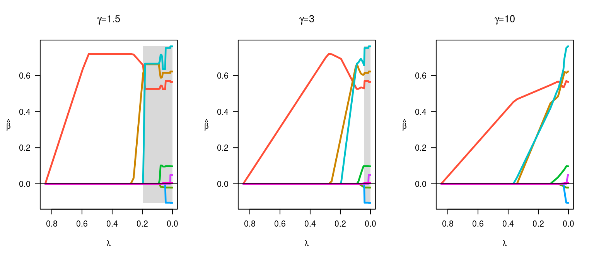
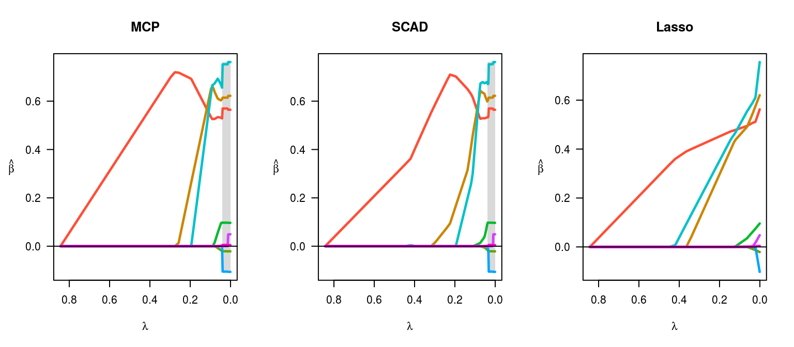
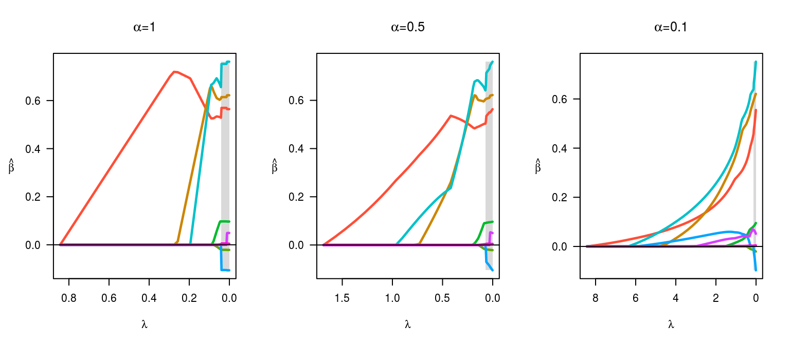

ncvreg fits models that fall into the penalized likelihood framework. Rather than estimating \(\bb\) by maximizing the likelihood, in this framework we estimate \(\bb\) by minimizing the objective function
\[ Q(\bb|\X, \y) = L(\bb|\X,\y) + P_\lam(\bb), \]
where \(L(\bb|\X,\y)\) is the loss (typically, the negative log-likelihood) and \(P_\lam(\bb)\) is the penalty. This article describes the different penalties available in ncvreg; see models for more information on the different loss functions available. Throughout, linear regression and the Prostate data set is used
This is the default penalty in ncvreg.
EQUATION HERE.
PICTURE OF PENALTY.
The following figure illustrates the effect of changing \(\gamma\):
par(mfrow=c(1,3))
fit <- ncvreg(X, y, gamma=1.5)
plot(fit, main=expression(paste(gamma,"=",1.5)))
fit <- ncvreg(X, y)
plot(fit, main=expression(paste(gamma,"=",3)))
fit <- ncvreg(X, y, gamma=10)
plot(fit, main=expression(paste(gamma,"=",10)))
At smaller \(\gamma\) values, the estimates transition rapidly from 0 to their unpenalized solutions; this transition happens more slowly and gradually at larger \(\gamma\) values. Note that one consquence of these rapid transitions at low \(\gamma\) values is that the solutions are less stable (the gray region depicting the region of the solution path that is not locally convex is larger).
EQUATION HERE.
PICTURE OF PENALTY.
par(mfrow=c(1,3))
fit <- ncvreg(X, y)
plot(fit, main="MCP")
fit <- ncvreg(X, y, penalty="SCAD")
plot(fit, main="SCAD")
fit <- ncvreg(X, y, penalty="lasso")
plot(fit, main="Lasso")
EQUATION HERE.
par(mfrow=c(1,3))
fit <- ncvreg(X, y)
plot(fit, main=expression(paste(alpha,"=",1)))
fit <- ncvreg(X, y, alpha=0.5)
plot(fit, main=expression(paste(alpha,"=",0.5)))
fit <- ncvreg(X, y, alpha=0.1)
plot(fit, main=expression(paste(alpha,"=",0.1)))
MENTION ELASTIC NET